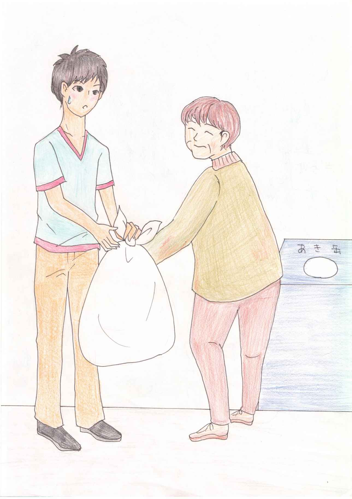
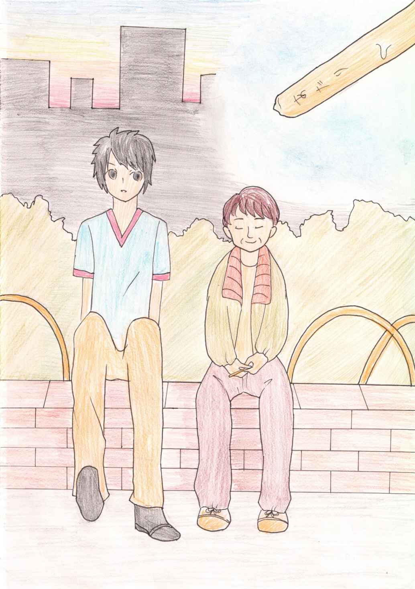
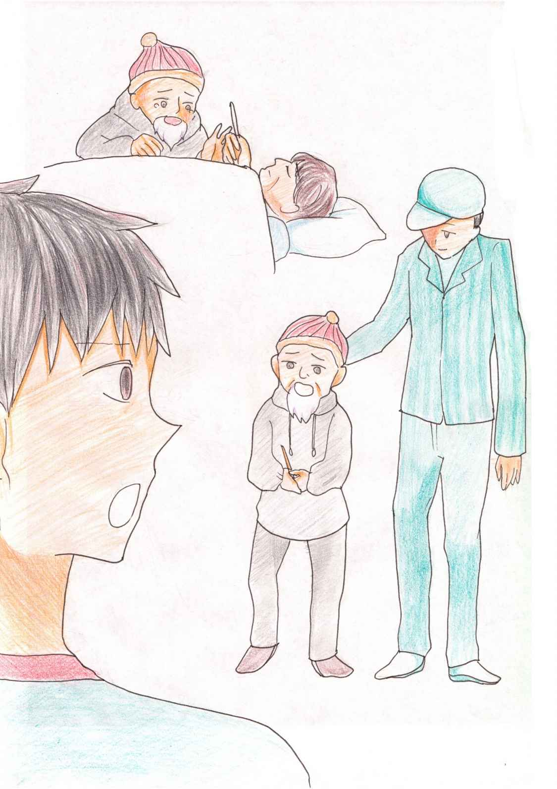

| あたり。 (ネット文庫星の砂) | |
| KO・HANA | |
| netbunkohoshinosuna (2019) | |
福岡は真夜中のゴミ回収が普通。田舎出身の俺はつい、忘れる。だって、朝８時くらいだろ普通は？
...で、やってしまった。
月一の缶回収日、夜中に出すのを忘れた。
俺は袋いっぱいの缶をどうしようか迷う。部屋に戻すにも場所がないし、外に置いたら大家に怒られる。
そんな時、自転車の後ろに缶が詰まった袋を乗せた男がこちらに向かってやって来る。
彼はいつも見かける...その、言い方悪いけど、ホームレス。
年齢はもう、おじいちゃんくらい。
毎朝、俺がバイトに行く時にゴミをあさって缶を集めていた。
どうするんだろう？ と、ずっと思っていたらバイト先の店長に、アルミ缶を集めて業者に渡せば金になると教えて貰った。
収入源がない彼らはそうやってお金を稼いでいる。それを嫌がる輩もいるけど、俺はいいんじゃないと思う。
お金ないとやっていけない。
前を過ぎて行く、その人に俺は声をかけた。
「あの、これ要ります？」
袋を見せた。
もしかして見下されたとか思われるかな？ 一瞬考えてしまった。でも、オジイサンは人懐っこい笑顔で、「いいの？ありがとう」と御礼を言った。
ちょっと、チクッとした。余りにも良い笑顔だったから。捨てようとしてたのに...「ありがとう」なんて...。
オジイサンは嬉しそうに自転車に乗せて、もう一度、俺に頭を下げて走って行った。

それからなんとなく、ビールとかアルミ系を選んでしまうようになった。袋にはアルミ以外入れない。前の袋もアルミ系だけだった。バイトに行く時にオジイサンを見かけたら、お互い挨拶するようになっていて...
二回目の回収の時、オジイサンが来るのを待った。
遠くからオジイサンが来るのが見えて声をかけた。
「ありがとう。」
オジイサンはまた人懐っこい笑顔を見せた。
「これ、お礼」
オジイサンが俺にくれた物。
当たりと書かれたアイスの棒。
自分で食べればいいのに...オジイサンを見るとニコと笑っていて、「ありがとう」と俺も言った。
オジイサンが自転車に乗って去ろうとした時、「名前なんて言うんですか？」と聞いた。
「英臣」
オジイサンはそう答えた。
「俺はまさる。優って書く」
「まーちゃんだね」
英臣さんは笑う。
この日から俺はまーちゃんでオジイサンは英臣さんと呼び合うようになる。
夏...英臣さんは暑い中必死で缶を潰していた。潰して袋に入れて業者に渡すのだろう。
「はい。差し入れ」
英臣さんに棒アイスを渡す。
「まーちゃん」
英臣さんはいつもの笑顔。
俺と英臣さんは世間話をよくする。
英臣さんは元、会社員で結婚もしていて、でも、離婚して...会社も倒産して...英臣さんは頑張って就職先を捜したけど仕事がなく今に至るそうだ。
でも、気楽だから良いと笑う。
「俺はさ、バカだから大学落ちて...バイトしながら予備校通ってて...たまに虚しくなったりする」
友人は就職したり大学行ったり...なんか、取り残された感じがした。
「まーちゃん、浮浪者のオイラが言うのも変だけどね、世の中...会社や学業だけじゃないんだ。会社は繋がりないし...頭良くっても違う事に使ったら大変だよ...でも、オイラ思うんだ。まーちゃんみたいな子は当たりくじ引く」
「当たりくじ？」
「そう...アイスの棒に当たりって書いてあったらちょっと幸せになるだろ？まーちゃんはそれを知ってる。だから...そんな子は神様が贔屓してくれる」
英臣さんはニコと笑う。なんじゃソレ？ と俺も笑った。
「オイラもさ、こんなんだけど...当たり棒みたいな事あったりするだよ」
「どんな？」
「この先のコンビニに中国人の中年のオヤジが居るでしょ？」
「うん」

カタコトの日本語で接客している彼はよく注文ミスとかして客に怒られていて、たまに店長も怒鳴ってる。
でも彼は必死に頑張っている。
「王さんって言うんだけど、オイラとかたまにお金拾ったりして買い物するんだけど、あの人はさ...オイラにも同じ接客するんだ」
俺はキョトン
「お釣り返す時、ほかの店員は投げたり、オイラの手を触らないように返すのに、あの人は笑顔でアリガトウって言って手の平に両手を使ってお釣りくれんだよ...王さんいい人だよ」
英臣さんは嬉しそう。
「あと、まーちゃんもオイラに優しいだろ？」
なんか照れた。
「あ、」
英臣さんが声を上げた。
「なに？」
「当たった！」
英臣さんは子供みたいにはじゃいだ。
「良かったじゃん、またアイス食えるね」
俺がそう言うと英臣さんは嬉しそうに笑った。
次の日、アルミ缶を集める業者の人が居たからなにげに「この袋でいくらになるんですか？」と聞いた。
業者のオジサンは、「あ〜、今お兄ちゃんが食べてるアイスが買えるか買えないくらいかな？」と教えてくれた。
正直、えっ？ と思った。
あんなに必死に集めても何百にもならない...英臣さん...背中を丸めて懸命に缶を潰す英臣さんを思い出す。
俺...も手伝いとかしようかな？ って、考えてしまった。
でも...それから何日も英臣さんを見なくなった。
いつも缶を潰していた場所にも...どこにも...病気かな？
心配になった。
アルミ缶を回収している業者の車を見つけて、英臣さんを知らないかと聞こうと思った。
「あの...」
声をかけた。
「英臣さん...を」と聞いた時、業者のオジサンが、「兄ちゃんもしかして、まーちゃん？」と聞いてきた。
俺が返事すると、「おい、元じい。まーちゃん居た」とこちらに向かって来るホームレスのオジサンに声をかける。
「まーちゃん？」
オジサンは慌てて俺の側にきた。
「よかったあ、会えた」
元じいと呼ばれたオジサンはポケットからアイスの棒を出した。
「これ、英さんから」と渡された。
「何ですか？」
「形見だよ」
「えっ？」
「英さん...先週、トラックに跳ねられて...」
そう言って元じいは涙をにじませた。
「俺が付き添ったんだ。亡くなる前にさ...これをアンタにって...なんもお礼出来ないから...ありがとう、まーちゃんって」
元じいは大粒の涙を零した。

「じいさん、兄ちゃんの事をよく話してたよ。すごく優しい子で...まーちゃんにおはようとか言われるだけで人でいられるって...息子みたいで...会うのが嬉しいって...ヒデじいにはまーちゃんくらいの年で別れた息子が居るんだって...」
「そのアイスはまーちゃんがくれたんだろ？ ヒデさんが嬉しそうに話してた...小さいアイスの棒だけどヒデさんには宝物でさ...大事にしてたよ」
元じいは泣いて...業者のオジサンも...そして俺も...アイスの棒を握りしめた。
たいした...事なんてしてない...英臣さんにお礼言われる事なんて...
「まーちゃんありがとうな。俺達はさ...見下されて生きてきた...、でもヒデさんは幸せそうに笑ってた...きっと、まーちゃんに会えたからだよ」
ありがとうな。
英臣さんの笑顔を思い出した。
ありがとう...なんて言うな...ばか...こっちがありがとうだよ。
俺はアイスの棒をポケットにしまう。
小さな幸せをポケットに...英臣さん...いつか、そっち行く時...棒アイス持っていくから...一緒に食べよう...当たりが出たらいいね。
◎ 終わり ◎